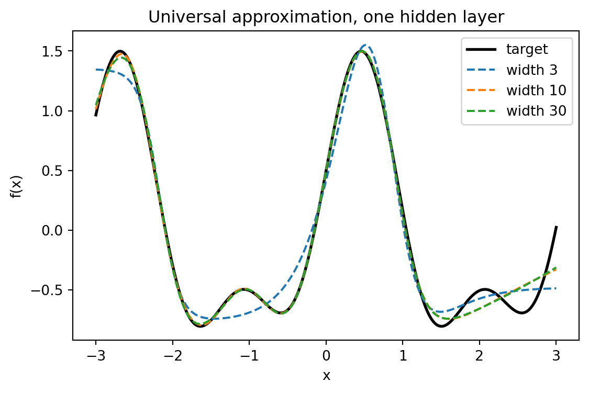
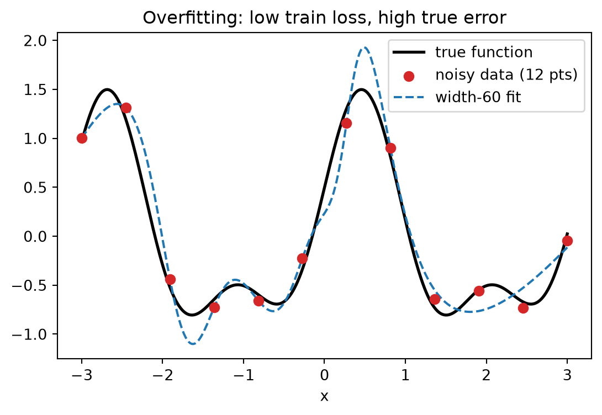
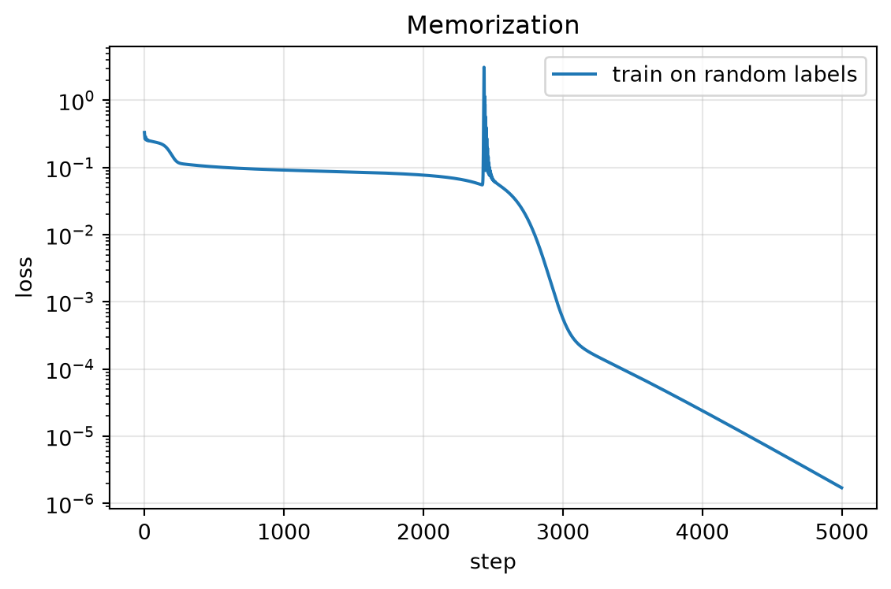
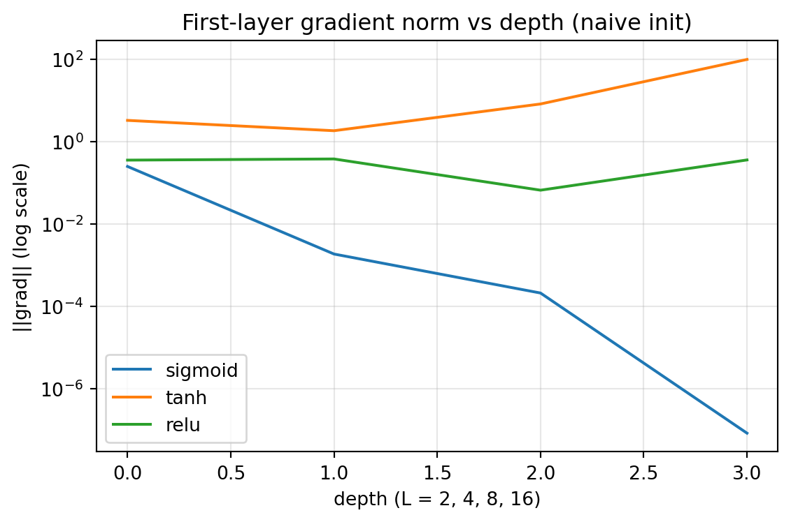

import matplotlib.pyplot as plt
import numpy as np
from dlbook.nn import MLPNumpy
from dlbook.utils import plot_loss_curves, set_seed
set_seed(42)
f = lambda x: np.sin(2 * x + 0.7) + 0.5 * np.sin(4 * x - 0.3)
X = np.linspace(-3, 3, 60).reshape(-1, 1)
Y = f(X)7 MLP、万能逼近与第二次寒冬
1986 年之后，世界给过神经网络一个机会。反向传播登上 Nature，媒体宣称”会思考的机器”近在眼前，神经网络公司扎堆上市，DARPA 追加投资。然后，大约在 1995 年，这一切再次退潮。会议投稿暴跌，经费转向，一个叫”支持向量机”的对手接管了机器学习。本章解剖这第二次繁荣与幻灭：理论给了多层网络一张巨额支票（万能逼近），而实践只兑现了其中一小部分。我们要亲手弄清楚。支票上的哪部分是真的，哪部分是空头。
Tip算力需求
A 级：笔记本 CPU · 全部实验合计约 1 分钟。
- 算力：Sun 工作站进入实验室（约 10 MIPS），训练几千参数的网络以小时计；今天本节的实验在笔记本上以秒计；
- 数据：UCI 机器学习库（1987 年上线）是当时最大的公开数据集合集。数百个”玩具级”数据集，规模以千计；
- 认知：反向传播被广泛（过度）解读为”多层问题已解决”；万能逼近定理（1989）火上浇油。“理论上什么都能学”；
- 产业：NeuralWare 等公司上市，财报里”神经网络”是最性感的词；日本通产省的”神经计算”计划与第五代计划一起，在 1990 年代初双双哑火。
7.1 本章问题
上一章我们造好了发动机，并在 XOR 上完成了复仇。现在面对的是当年研究者面对的真正拷问，它有两个不对称的半句：
- 理论上：多层网络的能力边界在哪？（万能逼近定理的回答）
- 实践上：为什么”理论上能”迟迟兑换不成”实际上行”？
一句箴言可以预览全章：万能逼近是一个关于”存在”的定理，而学习是一个关于”寻找”的过程。这两件事之间的鸿沟，就是本章的舞台。
7.2 历史中的尝试（包括弯路）
万能逼近定理（Cybenko 1989 (Cybenko 1989)；Hornik 1991 (Hornik et al. 1989)）：单个隐藏层、足够多 sigmoid 型神经元、任意连续函数。逼近误差可以任意小。媒体与产业把它读成了”神经网络可以学任何东西”。
过度的承诺。定理发表后，军方的乐观报告、公司的招股书、媒体的科普文互相引用放大。典型句式：“既然任意连续函数都能逼近，那么……”。然后直接跳到应用愿景。少数冷静者（包括定理的证明者们）强调：定理不保证梯度下降能找到那组权重，也不保证找到的函数在训练数据之外表现良好。这两句免责声明在狂欢中无人朗读。
现实的账单。到 1990 年代初，三个硬伤浮出水面：①小数据上严重过拟合；②稍深（多于两三层）的网络训练不稳定；③工程交付远不及预期。经费与人才流向新的救主。Vapnik 的支持向量机，带着优雅的统计学习理论与泛化界而来。反讽的是：SVM 阵营赢在”有理论保证”，而神经网络最终翻盘靠的是理论与保证都匮乏的算力加数据（2.4 的 Bitter Lesson 时刻）。
缓一缓。让我们把刚才的内容用一句话再说一遍。这一节的核心是：历史中的尝试（包括弯路）。
万能逼近定理说：存在一组权重，使单隐层网络逼近任意连续函数到任意精度。
请你设计两个实验，把这个”存在性”与另两件事区分开：
- 可学性：梯度下降能不能找到那组（或够好的）权重？
- 泛化性：找到的那组权重，在训练数据之外表现如何？
对每个实验写出：数据怎么造、网络怎么配、看什么指标、预期什么结果才算”区分成功”。写完再往下读。本章的实验一与实验二就是这道题的参考答案，对照你自己的设计，差异处最有收获。
7.3 核心思想
万能逼近说的是表示力，不是学习力。 定理的直觉版本：sigmoid 神经元是”软台阶”，两个反向的台阶可以叠出一个”凸包”（局部隆起），足够多的凸包叠加可以拼出任何连续函数。就像足够小的瓷砖可以铺出任何曲线。它保证解在参数空间里存在，但对三件事保持沉默：
- 梯度下降能否走到那个解附近（优化难题）；
- 即使走到了，解在未见数据上是否可用（泛化难题）；
- 需要多少神经元才”够”（效率难题。同样的表示力，宽而浅与窄而深谁划算？这个问题的答案要等到残差网络时代）。
过拟合是”经验风险最小化”的暗面。 我们一直在做的是：把训练集上的 loss 降到底。但当数据带噪、模型容量充足时，“降到底”意味着把噪声也当规律背下来。训练误差越低，真实误差可能越高。“学习”与”记忆”的分界，就是泛化问题的核心。
深层的病已经在暗处生长。 sigmoid 的导数至多 0.25，反向传播时梯度逐层连乘。16 层网络的第一层收到的梯度天然比第二层小约四个数量级。这个诊断 1991 年就有人写出（Hochreiter 的硕士论文 (Hochreiter 1991)），但是，又要等十年才被广泛听见。那是 2.2 章的故事，本章先用实验把它拍在明面上。
缓一缓。把刚才的推导或实验消化一下再继续。这一节的核心是：核心思想。
7.4 从零实现
工欲善其事：1.3 章的标量引擎负责讲原理，本章的实验规模需要向量引擎。1.3 的练习 5 让你把 Value 升级成 numpy 向量版。现在揭晓官方答案：dlbook.nn.MLPNumpy，反向传播不再建图，直接按那三条递推手写（forward/backward/step 三十余行，值得打开对照）。它还悄悄做了两件”来自未来”的事：权重按扇入缩放初始化、支持动量法（Polyak 1964，够古老）。为什么这两件事必不可少，分别是 2.1 与 2.3 的正式内容，此处先当黑魔法用。
实验一：宽度买表示力。 同一个网络结构、同一份数据、同样的训练步数，只改隐藏层宽度：
def fit(width, X, Y, steps=8000, lr=0.05, seed=42):
m = MLPNumpy(1, [width, 1], seed=seed)
for _ in range(steps):
m.backward(X, Y)
m.step(lr, momentum=0.9)
return m
models = {}
for width in (3, 10, 30):
m = fit(width, X, Y)
models[width] = m
loss = float(np.mean((m.forward(X) - Y) ** 2))
print(f"width={width:2d}: 最终 loss = {loss:.6f}")width= 3: 最终 loss = 0.019993
width=10: 最终 loss = 0.006367
width=30: 最终 loss = 0.006175典型结果：宽度 3 卡在 \(\approx 0.020\)（RMSE 约为函数幅度的七分之一。表示力不足，3 个 tanh 神经元拼不出足够的台阶）；宽度 10 降到 \(\approx 0.006\)；宽度 30 与 10 几乎持平。眼睛验证一下：
fig, ax = plt.subplots(figsize=(6.5, 4))
xs = np.linspace(-3, 3, 300).reshape(-1, 1)
ax.plot(xs, f(xs), "k-", lw=2, label="target")
for width, m in models.items():
ax.plot(xs, m.forward(xs), "--", lw=1.5, label=f"width {width}")
ax.legend()
ax.set_xlabel("x")
ax.set_ylabel("f(x)")
ax.set_title("Universal approximation, one hidden layer")
plt.show()
宽度 3 的曲线肉眼可见地”跟不上”目标的高频起伏。这就是定理里”足够多”三个字的分量。而 10 与 30 的贴合难分伯仲，提前预告了一个现代命题：超过够用之后，堆宽度收益递减（深度才是更划算的方向。3.2 的伏笔）。
实验二：训练误差是会说谎的。 现在只给模型 12 个带噪声的采样点（噪声 \(\pm 0.15\)，噪声方差 \(\approx 0.0075\)），用宽网络去拟合：
rng = np.random.default_rng(7)
Xn = np.linspace(-3, 3, 12).reshape(-1, 1)
Yn = f(Xn) + rng.uniform(-0.15, 0.15, (12, 1))
m_over = fit(60, Xn, Yn, steps=6000)
train_loss = m_over.backward(Xn, Yn)
dense_loss = float(np.mean((m_over.forward(X) - Y) ** 2))
print(f"训练误差（12 个噪声点）: {train_loss:.6f}")
print(f"真实误差（60 个干净点）: {dense_loss:.6f} （噪声方差 0.0075）")训练误差（12 个噪声点）: 0.008179
真实误差（60 个干净点）: 0.039366 （噪声方差 0.0075）训练误差被压到噪声方差附近。模型几乎背下了每一个噪声；而它对真实函数的误差是训练误差的数倍。画出来看它的”学习成果”：
fig, ax = plt.subplots(figsize=(6.5, 4))
ax.plot(xs, f(xs), "k-", lw=2, label="true function")
ax.scatter(Xn, Yn, c="tab:red", s=40, zorder=3, label="noisy data (12 pts)")
ax.plot(xs, m_over.forward(xs), "--", lw=1.5, label="width-60 fit")
ax.legend()
ax.set_xlabel("x")
ax.set_title("Overfitting: low train loss, high true error")
plt.show()
拟合曲线在数据点之间剧烈扭动。它在两点之间插出的噪声的形状。1990 年代的研究者在真实任务上看到的就是这个：训练集表现漂亮，交付即翻车。“验证集”“早停”“正则化”这些今天的地板砖，当年正是为填这个坑发明的（2.1 与 2.3 的内容）。
缓一缓。回顾一下这一节讲了什么。这一节的核心是：从零实现。
7.5 消融实验
消融一：把数据换成纯噪声，模型还学得动吗？ 若上一节的网络只是在”拟合函数”，给它无结构的目标应当失灵；若它其实是个”万能记忆器”。
rng = np.random.default_rng(3)
Xr = np.linspace(-3, 3, 10).reshape(-1, 1)
Yr = rng.uniform(-1, 1, (10, 1)) # 纯随机标签，与 x 无任何关系
m_mem = MLPNumpy(1, [40, 1], seed=42)
history = []
for step in range(5000):
history.append(m_mem.backward(Xr, Yr))
m_mem.step(0.05, momentum=0.9)
print(f"随机标签上的训练误差: {history[0]:.3f} → {history[-1]:.2e}")随机标签上的训练误差: 0.333 → 2.58e-06plot_loss_curves({"train on random labels": history}, title="Memorization", logy=True);
训练误差一路压到 \(10^{-6}\) 量级。宽网络连纯噪声都能记住。容量足以背下任何东西，“降到 0”不能证明学到规律。这个观察在 1990 年代是警钟，三十年后将以”双下降”与”grokking”的面目重新成为前沿（6.3 的伏笔）。
消融二：把网络做深，梯度还传得动吗？ 换回 1.3 的标量引擎（要看清每一层的账），保持朴素的均匀初始化，只改激活函数与深度，测量第一层收到的梯度范数：
import random
from dlbook.autodiff import MLP as ScalarMLP
from dlbook.autodiff import Value, zero_grad
def first_layer_grad_norm(depth, activation, seed=0):
set_seed(seed)
model = ScalarMLP(1, [8] * depth + [1], activation=activation, output_activation="linear")
data = [((x / 10.0,), random.uniform(-1, 1)) for x in range(10)]
loss = sum((model(list(xi)) - Value(t)) ** 2 for xi, t in data) * 0.1
zero_grad(model.parameters())
loss.backward()
return model.grad_norms()[0]
for activation in ("sigmoid", "tanh", "relu"):
norms = [first_layer_grad_norm(L, activation) for L in (2, 4, 8, 16)]
print(f"{activation:>8}: " + " ".join(f"L={L}: {g:.2e}" for L, g in zip((2, 4, 8, 16), norms))) sigmoid: L=2: 2.53e-01 L=4: 1.89e-03 L=8: 2.13e-04 L=16: 8.39e-08
tanh: L=2: 3.33e+00 L=4: 1.87e+00 L=8: 8.34e+00 L=16: 1.01e+02
relu: L=2: 3.61e-01 L=4: 3.85e-01 L=8: 6.71e-02 L=16: 3.64e-01depths = (2, 4, 8, 16)
plot_loss_curves(
{a: [first_layer_grad_norm(L, a) for L in depths] for a in ("sigmoid", "tanh", "relu")},
title="First-layer gradient norm vs depth (naive init)",
xlabel="depth (L = 2, 4, 8, 16)",
ylabel="||grad|| (log scale)",
);
三行数字，三种命运：
- sigmoid：\(2.5\times10^{-1} \to 8.4\times10^{-8}\)。十六层深时第一层的梯度比浅层小七个数量级。导数 \(\le 0.25\) 的连乘不是玩笑，这就是梯度消失的字面意思；
- tanh：没有消失，但是，随深度大幅波动。朴素初始化下它同样不可靠（“稳定”要等 2.1 的初始化理论）；
- relu：四个深度下数量级稳定。导数恒为 1 的区域像高速公路。为什么 2010 年才有人认真用它（2.3），而它普及的路上还躺着”神经元死亡”等新坑，是后话。
两张空头支票的合影到此拍完：优化难题（深了学不动）与泛化难题（浅了记噪声），万能逼近定理对二者均不负责。1995 年前后，产业界用脚投票，第二次寒冬降临。
缓一缓。到这里停一停，把刚走过的路理一理。这一节的核心是：消融实验。
7.6 本章 Loss 账本
| 问题 | 回答 |
|---|---|
| 在优化什么 loss？ | 全批 MSE；实验二里它是”会撒谎的 loss”。降到很低不代表学到规律 |
| 数据从哪来？ | 人工构造的函数采样与噪声。UCI 时代的真实数据也不过是它的放大版 |
| 买到了什么能力？ | 表示力确凿（宽度实验）；训练机制确凿（能降到接近噪声底） |
| 没买到什么？ | 泛化保证（过拟合）、深层可训性（梯度消失）、效率（宽 vs 深的最优配比未知） |
这份账本第一次出现”loss 降到很低，能力却没到位”的条目。记住这个不舒服的感觉。它将贯穿全书：从 RLHF 的 reward hacking（7.3）到评测集污染（9.2），“指标与目标的偏离”是降 loss 事业的永恒阴影。
- 万能逼近（宽度版）→ “够宽的单层”与”够深的网络”的效率之争。深度优先是 2015 年后的答案，6.x 规模时代将再问一次；
- 过拟合与验证集 → 正则化、dropout、早停（2.3），直至大模型时代的双下降与” grokking”（6.3）。容量过剩从病症变成了谜题再变成了特性；
- 梯度消失 → ReLU、初始化理论、BatchNorm、残差（2.1–2.3 与 3.2）。一条贯穿卷一 Part 2 的主线就此埋下；
- “理论保证”阵营（SVM）的胜利与失败 → 提醒我们：工程证据的时滞可以让正确的理论先输一阵（2.4 复盘）。
Cybenko, G. (1989) (Cybenko 1989). Approximation by superpositions of a sigmoidal function. Mathematics of Control, Signals and Systems 2, 303–314.
- 读什么：定理 1 的陈述与证明骨架（密度论证。凸组合在连续函数空间中稠密）；
- 跳过什么：泛函分析的细节；
- 历史注：更早的 Kolmogorov（1957，希尔伯特第 13 问题的解）给出了更强的精确表示定理，但是，用的是不可构造的病态函数。对比之下你会明白为什么”存在性 + 可构造性 + 可学习性”是三个世界。另外，Hochreiter 1991 (Hochreiter 1991) 的梯度消失诊断（德语硕士论文）发表在本章时代的正中间，却几乎无人引用。重要的诊断与被听见的诊断之间，隔着十五年的时差（2.2 的开场）。
7.7 遗留问题
- 泛化之谜：什么时候”容量大 + 训练狠”反而更好？（2.1 的经验风险理论，6.3 的双下降）；
- 深层之病：梯度消失有没有系统解法？（2.2 诊断，2.3 工具箱）；
- 初始化这件”黑魔法”的理论是什么？（2.1 的扇入缩放与 Xavier）；
- 效率之谜：同样的表示力，深与宽怎么配？（3.2 残差，6.2 Chinchilla 的算力最优配比。同一问题在两个尺度上的两场演出）。
缓一缓。让我们把刚才的内容用一句话再说一遍。这一节的核心是：遗留问题。
7.8 参考文献
- Cybenko, George (1989). Approximation by Superpositions of a Sigmoidal Function. Mathematics of Control, Signals and Systems, 2, 303–314. doi:10.1007/BF02551274
- Hornik, Kurt and Stinchcombe, Maxwell and White, Halbert (1989). Multilayer Feedforward Networks Are Universal Approximators. Neural Networks, 2, 359–366. doi:10.1016/0893-6080(89)90020-8
- Hochreiter, Sepp (1991). Untersuchungen zu dynamischen neuronalen Netzen. Diploma Thesis (in German), Technische Universit"a. ↗ 搜索原文
- Bengio, Yoshua and Simard, Patrice and Frasconi, Paolo (1994). Learning Long-Term Dependencies with Gradient Descent is Difficult. IEEE Transactions on Neural Networks, 5, 157–166. doi:10.1109/72.279181
- Sutton, Richard (2019). The Bitter Lesson. Incomplete Ideas (blog). link. ↗ 搜索原文
7.9 练习
- 造轮子：给
MLPNumpy.backward挑错。遮住源码，只凭 1.3 的三条递推重写，用tests/test_mlp_numpy.py的有限差分对拍验证。 - 预测再运行：把实验一的目标函数换成奇对称的 \(\sin(2x)+0.5\sin(4x)\)（无相移），先猜各宽度的 loss 会怎样变化，再运行。若与预期不符，用本章”表示力 vs 优化力”的框架解释你看到的差异（提示：对称性是鞍点的温床）。
- 消融：实验二中把训练步数从 6000 加到 30000，训练误差与真实误差各走向何处？画出差距随步数的曲线，标出”开始过拟合”的位置。这就是早停的原理。
- 论文映射：用四问账本拆 Cybenko 1989 (Cybenko 1989)。注意第一问的标准答案（它不在优化任何 loss），以及这份账本与感知机一章账本的相似之处。
- 进阶：relu 深网络的梯度虽然量级稳定，但是，试把深度加到 24、32 并换几个种子。观察到不稳定后，解释它与 sigmoid 梯度消失的区别（提示：relu 的梯度是 0/1 的门，问题出在门的”开合比例”而非幅度）。
Note练习答案
练习 2：奇对称目标下，宽 10/30 的 loss 会明显变差（0.03 量级，部分种子卡在”半周期”鞍点）。表示力没变，优化难度变了。这是”存在 ≠ 可寻”的最小案例。多换几个种子能看到方差。
练习 3：训练误差单调下降，真实误差先降后升，谷底在某个中间步数。谷底右侧的每一 step 都在”背噪声”。早停 = 把停机条件放在谷底，用一个验证子集探测它。
练习 5 提示：relu 深网的失稳来自”活跃单元比例”的随机波动被深度放大（某层若大量神经元同关死，等效断路）。它路径稀疏化。批量归一化与残差（2.3、3.2）正是对这两种病的不同手术。
Brown, Tom B., Benjamin Mann, Nick Ryder, et al. 2020. “Language Models Are Few-Shot Learners.” NeurIPS.
Cybenko, George. 1989. “Approximation by Superpositions of a Sigmoidal Function.” Mathematics of Control, Signals and Systems 2: 303–14. https://doi.org/10.1007/BF02551274.
Devlin, Jacob, Ming-Wei Chang, Kenton Lee, and Kristina Toutanova. 2019. “BERT: Pre-Training of Deep Bidirectional Transformers for Language Understanding.” NAACL.
He, Kaiming, Xiangyu Zhang, Shaoqing Ren, and Jian Sun. 2015. “Deep Residual Learning for Image Recognition.” arXiv Preprint arXiv:1512.03385.
Hochreiter, Sepp. 1991. “Untersuchungen Zu Dynamischen Neuronalen Netzen.” Diploma Thesis (in German), Technische Universität München.
Hoffmann, Jordan, Sebastian Borgeaud, Arthur Mensch, et al. 2022. “Training Compute-Optimal Large Language Models.” arXiv Preprint arXiv:2203.15556.
Hornik, Kurt, Maxwell Stinchcombe, and Halbert White. 1989. “Multilayer Feedforward Networks Are Universal Approximators.” Neural Networks 2 (5): 359–66. https://doi.org/10.1016/0893-6080(89)90020-8.
Kaplan, Jared, Sam McCandlish, Tom Henighan, et al. 2020. “Scaling Laws for Neural Language Models.” arXiv Preprint arXiv:2001.08361.
Krizhevsky, Alex, Ilya Sutskever, and Geoffrey E. Hinton. 2012. “ImageNet Classification with Deep Convolutional Neural Networks.” NeurIPS.
Rafailov, Rafael, Archit Sharma, Eric Mitchell, Christopher D. Manning, Stefano Ermon, and Chelsea Finn. 2023. “Direct Preference Optimization: Your Language Model Is Secretly a Reward Model.” NeurIPS.